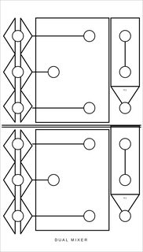
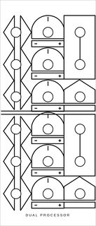
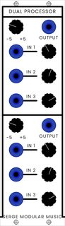
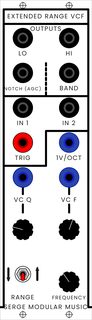
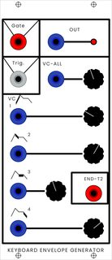
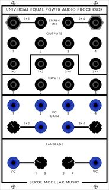
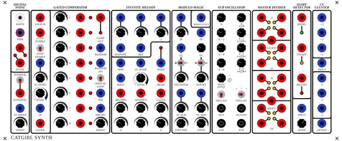
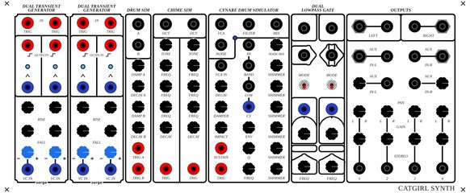
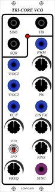

Serge-style panel artwork
Panel artwork for Serge-format synthesizer modules, from the 1973 paperface panels through SMMS and STS to Ken Stone's CGS designs. Every panel comes as a preview, editable SVG artwork and a 1:1 drill template, and the build pages show how to make each module: PCB sources, schematics and a parts list you can order from.

Panels by era




Paperface
41 panels. 1973 to 1976: the first Serge panels, printed on paper, with the early geometric symbols.






SMMS paper
6 panels. Serge Modular Music Systems, about 1976 to 1979: paper panels with squared boxes and the name in the top band.


SMMS metal overlay and STS
167 panels. The rounded-box layouts of the SMMS metal-overlay panels (about 1979 to the early 1990s) and the aluminium STS panels.




CGS (Catgirl Synth)
49 panels. Ken Stone's Catgirl Synth designs and the user's Catgirl and Human Comparator panel artwork, drawn in the Serge style.
Build a module
26 modules so far, each with its panels, how it works, every known PCB source, and a BOM spreadsheet. See them all →

Universal Audio Processor
Two VCAs with an equal-power control circuit, switchable between a dual VCA, a stereo panner and a voltage-controlled crossfader.

Tri-Core VCO
A stable triangle-core VCO with sine, triangle and pulse outputs, exponential and linear FM, PWM, sync and a VCO / LFO range switch.

VC Phaser
A voltage-controlled phase shifter with three phase-shifted outputs and a built-in mix for the classic notched phasing sound.

Wave Multipliers
Three separate voltage-controlled waveshapers that add harmonics to a signal instead of filtering them away.

Dual Universal Slope Generator
Two identical slope generators, each of which can be a slew limiter, envelope, LFO, audio oscillator or pulse divider.

Oscillator (1973)
The original paperface VCO: a sine-to-saw waveshaper under voltage control, two frequency inputs, hard sync and AC / DC outputs.

VC Filter (1973)
A two-pole state-variable resonant filter with simultaneous low-pass, band-pass and high-pass outputs.
Triple Comparator
Three comparators for squaring signals, variable-width pulses, level detection and amplitude-based logic.